Special Topics Case Study
Research & Activity Documentation
Haniya Butt
Introduction
A Gamified Pomodoro timer that encourages users to work by rewarding their focus with a digital reward, a plant collection.
Module 1: Concept
Research
Research done for this project was researching the different routes I could take and the kinds of softwares or programs I could use.
Action Research Phase 1
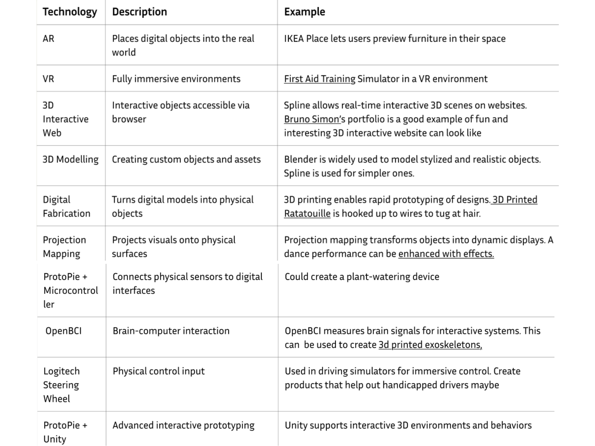

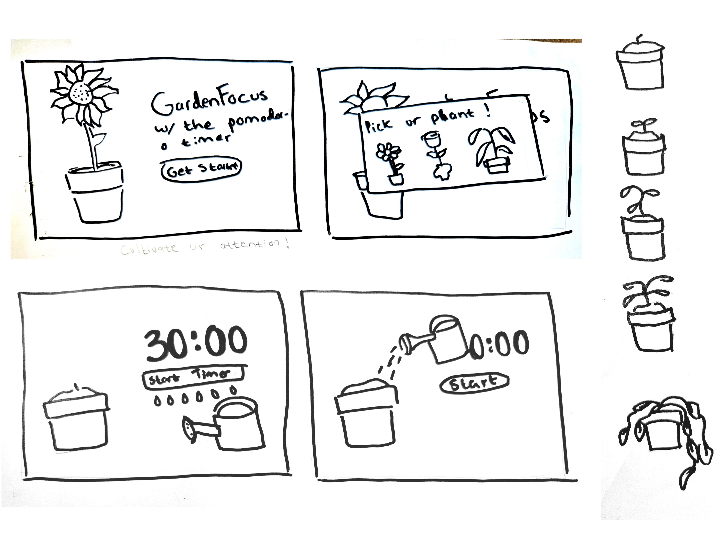
Action Research Phase 2
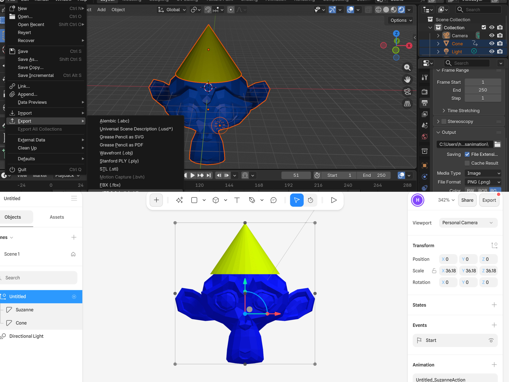
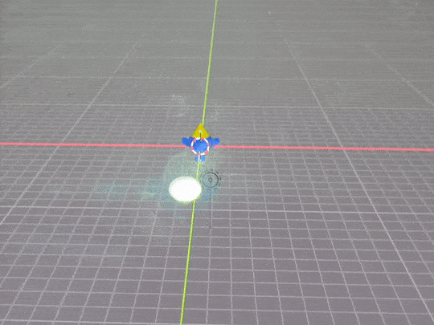
.gif)
Project 1: Concept
This was my final concept for the project I wanted to create.
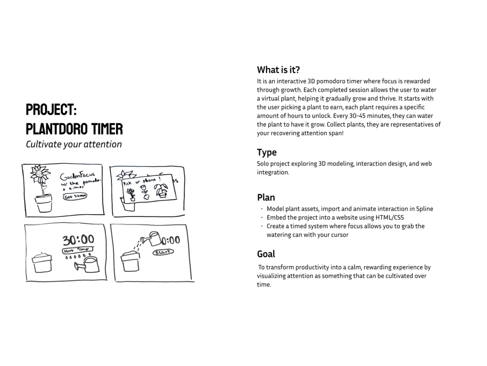
Module 2: Prototype
Research
Learning Modeling and Animating on Spline. Creating wireframes for my website.
Action Research Phase 1

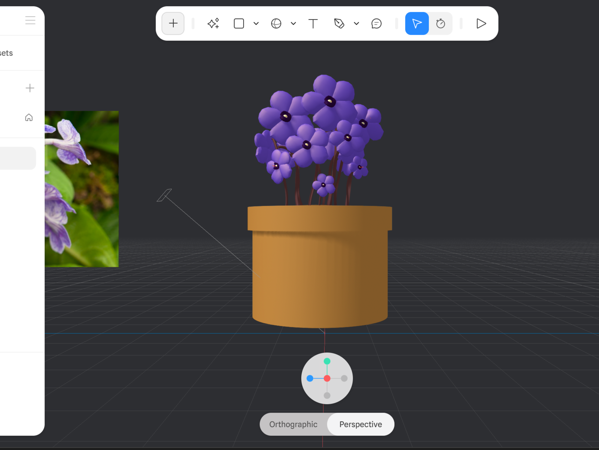
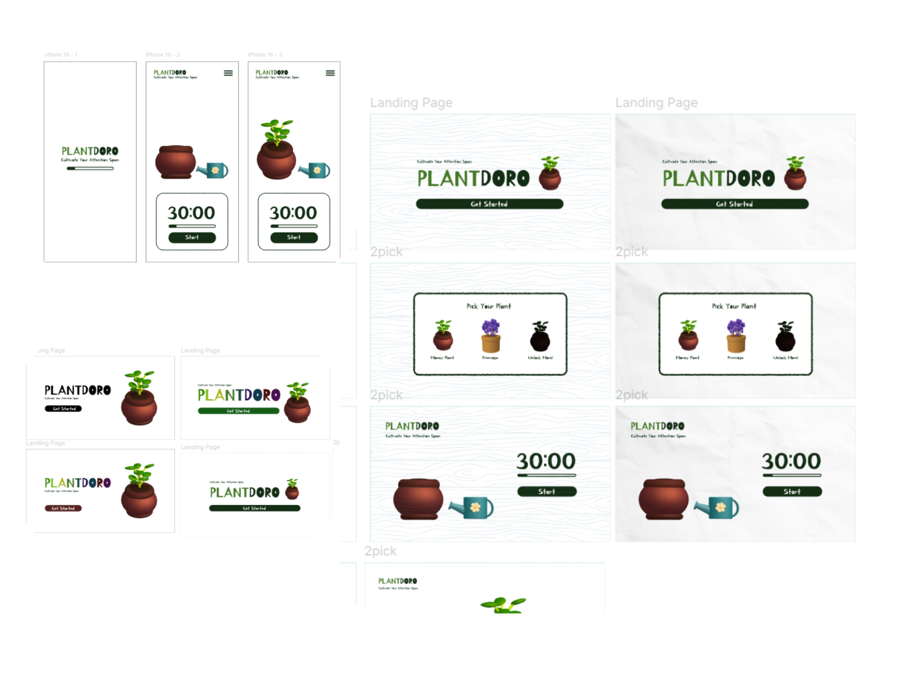
Action Research Phase 2
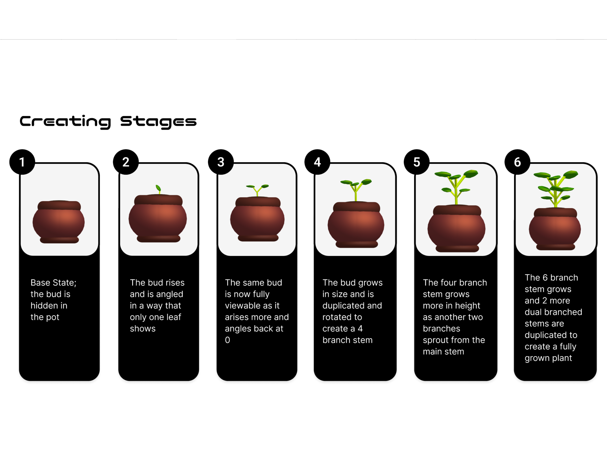
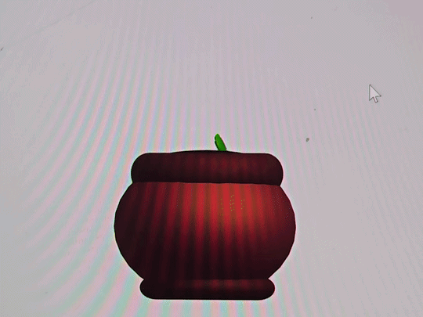
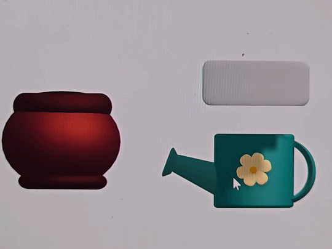
Project 2: Prototype
Prototype Research and Development
The Spline Animation Embedded (viewer is not meant to be moved, interact with objects ONLY).
- Click the top watering can and drop it in the plant for the full uncontrolled animation
- REFRESH PAGE
- Click the bottom watering can each time you want it to grow
Module 3: Product
Research
Putting everything together and refining the final product.
Action Research Phase 1
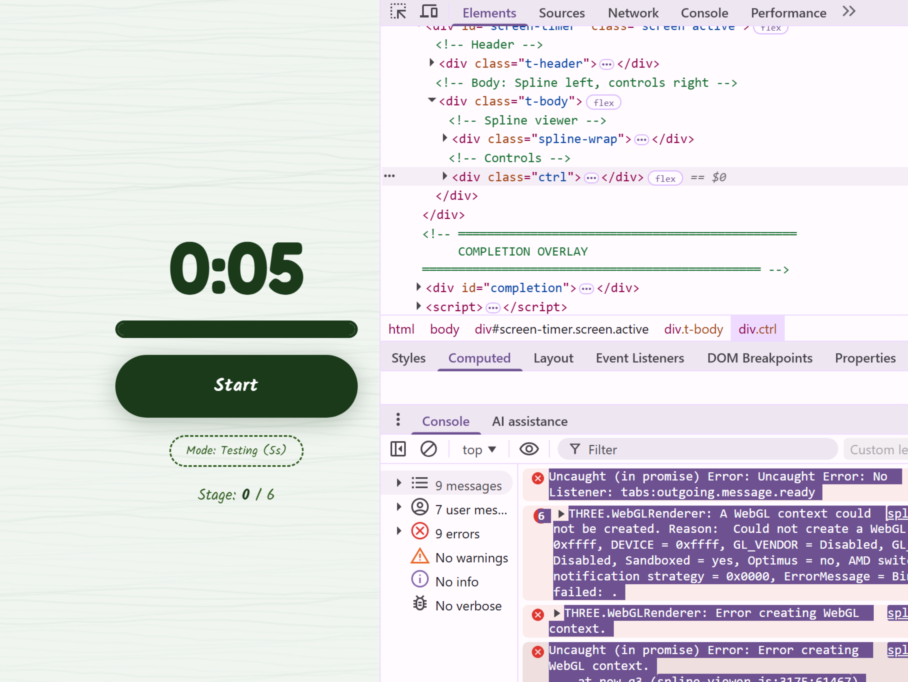
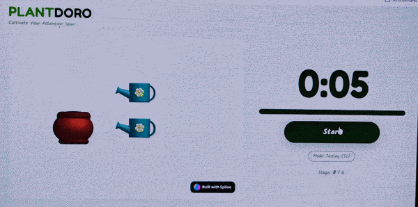
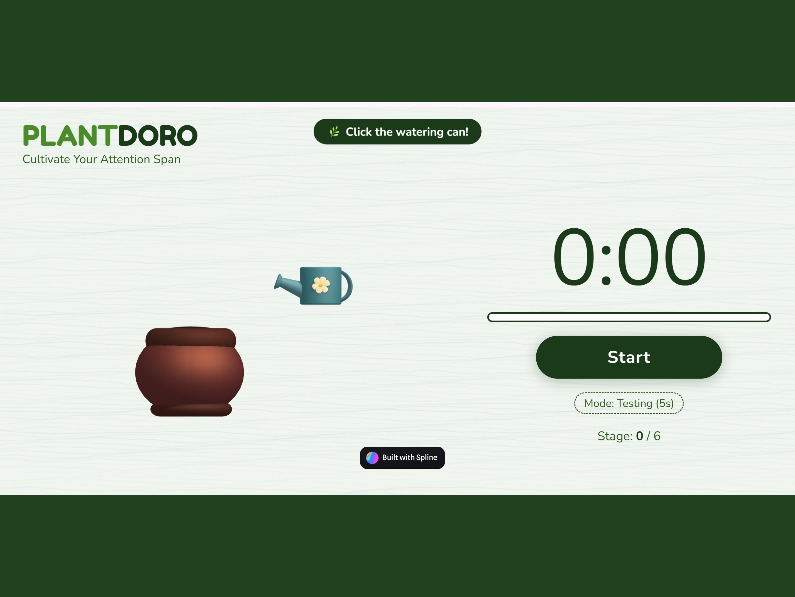
Action Research Phase 2

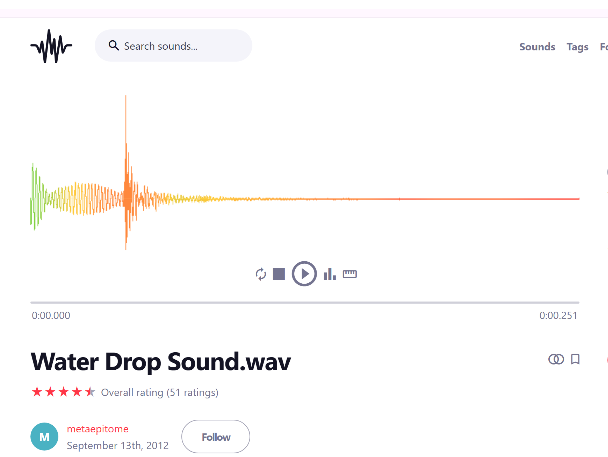
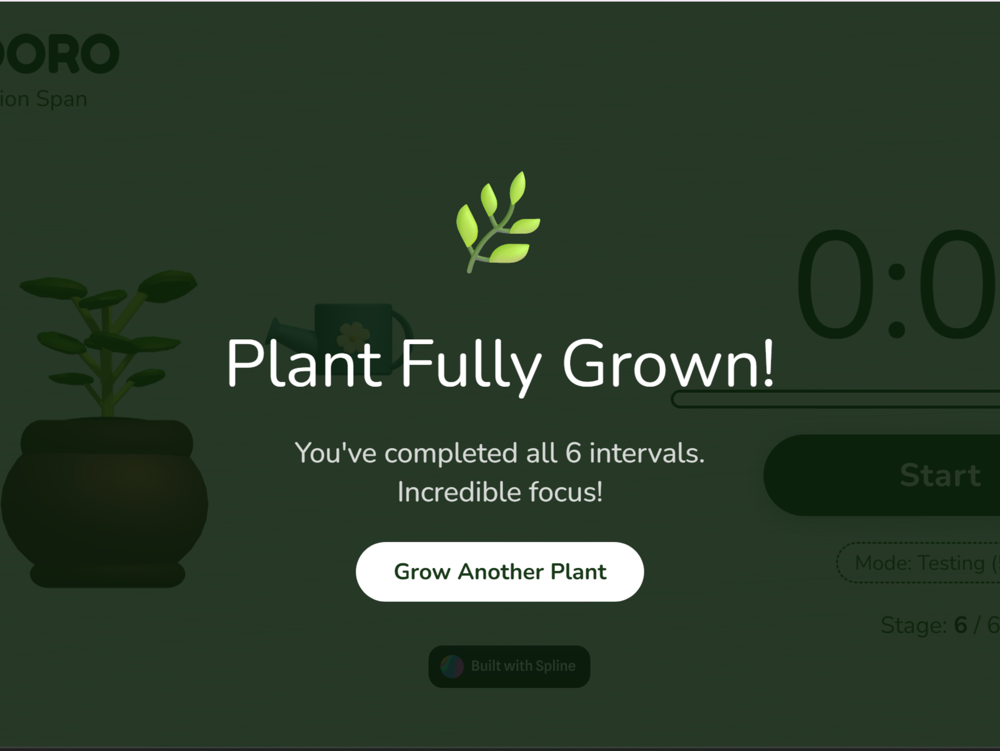
Project Product
My final website is a gamified pomodoro timer that encourages users to work by rewarding their focus with their own digital plant.
 🌿 View Live Site →
🌿 View Live Site →
Research Summation
This project explores how simple 3D interactions can keep users engaged through small actions over time. The design focuses on a calm experience where users care for a plant using animation and timed interactions. Research showed that simple and responsive interactions work better than complex ones, especially for quick or public use.
I also explored different tools like Spline, Framer, Claude, and Blender to understand what they are good at and where they fall short. This helped me find a balance between keeping the design simple and making it engaging.
Reflection
Throughout this course, I really learned how to use Spline. It was rough in the beginning, but over time it became very intuitive. I've learned that Spline is really great for building tools quickly, especially within short time frames. However, its simplicity can also be limiting, as the program gets overwhelmed very easily which can then affect the performance.
I also learned more about using Claude. While it was efficient it had ways of doing things that seemed more complex than they should. I was also able to learn the very basics of Framer, which was useful as a starting point for exploring other tools in the future.
Overall, this project made me much more confident in my ability to use 3D assets and implement them in a meaningful way.